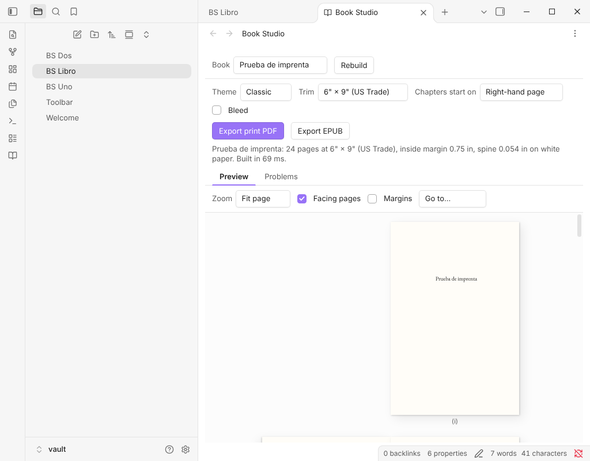

Free Obsidian plugin
Book Studio
Turn notes into a print-ready paperback PDF and an EPUB 3, entirely on your device.
Install from the Obsidian directory Open in Obsidian Source code and issues

What it does
Turn a folder of Markdown notes into a print-ready paperback PDF for Amazon KDP and an EPUB 3 for every ebook store. Everything happens on your device: your manuscript is never uploaded anywhere.
No Pandoc, no LaTeX, nothing else to install, and it works on Obsidian mobile too.
Try it in your browser → The web app opens with a sample book, The Wonderful Wizard of Oz, already typeset.
Highlights
- One note is the book. A manifest note lists the chapters as links, in order, under Front matter, Chapters and Back matter. Its properties hold the title, author, theme and trim. To reorder chapters, reorder the links.
- Real typesetting. Knuth–Plass line breaking, hyphenation in the book's language, smart quotes and dashes, old-style figures and small caps where the theme calls for them. Widows and orphans are avoided.
- Ready for KDP.
- The 6" × 9" trim, the most common paperback size.
- Inside margins that grow with the page count, as KDP requires.
- Optional bleed, embedded fonts, chapters that open on a right-hand page, and padding to KDP's 24-page minimum.
- The spine width is reported for your cover designer.
Details
- Version
- 0.1.3
- Needs Obsidian
- 1.7.2 or newer
- Platforms
- Desktop and mobile
- Author
- Siulved54
- Price
- Free and open source